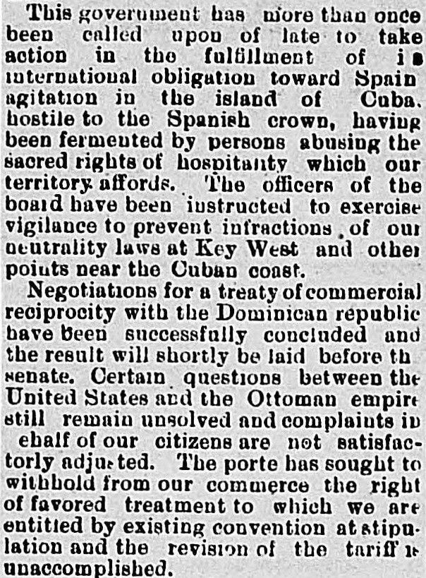
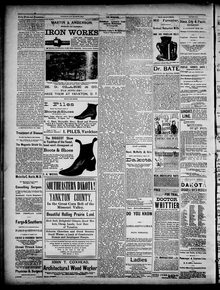

Sacred rights of hospitality which our territory affords, The officers ofSagrados derechos de hospitalidad que nuestro territorio brinda, Los oficiales de la junta
Press and Daily Dakotaian. Yankton, Dakota Territory [S.D.], December 1, 1884. Page 2.Press and Daily Dakotaian. Yankton, Dakota Territory [S.D.], 1 de diciembre de 1884. Página 2. View the originalVer el original


See the full pageVer la página completaThe Press and daily Dakotaian reported that negotiations for a treaty of commercial reciprocity with the Dominican Republic were successfully concluded and would soon be submitted to the Senate. The newspaper also noted that officers were instructed to prevent neutrality infractions near the Cuban coast, while reporting on unresolved matters with the Ottoman Empire and the lack of means for participating in international exhibitions.El Press and daily Dakotaian comunicó la feliz conclusión de las negociaciones de un tratado de reciprocidad comercial con la República Dominicana, el cual sería elevado a la brevedad al Senado. Añadió que se giraron instrucciones para atajar infracciones a la neutralidad en aguas cubanas, dando cuenta además de asuntos no resueltos con el Imperio Otomano y de la insuficiencia de fondos para concurrir a certámenes internacionales.
FULL TEXT:TEXTO COMPLETO:
This government has more than once been called upon of late to take action in the fulfillment of its international obligation toward Spain, the agitation in the island of Cuba, hostile to the Spanish crown, having been fermented by persons abusing the sacred rights of hospitality which our territory affords. The officers of the board have been instructed to exercise vigilance to prevent infractions of our neutrality laws at Key West and other points near the Cuban coast.Este gobierno ha sido llamado más de una vez últimamente a tomar acción en el cumplimiento de su obligación internacional hacia España, habiendo la agitación en la isla de Cuba, hostil a la corona española, sido fermentada por personas que abusan de los sagrados derechos de hospitalidad que nuestro territorio ofrece. Los oficiales de la junta han sido instruidos a ejercer vigilancia para prevenir infracciones de nuestras leyes de neutralidad en Cayo Hueso y otros puntos cerca de la costa cubana.
Negotiations for a treaty of commercial reciprocity with the Dominican republic have been successfully concluded and the result will shortly be laid before the senate. Certain questions between the United States and the Ottoman empire still remain unsolved and complaints in behalf of our citizens are not satisfactorily adjusted. The porte has sought to withhold from our commerce the right of favored treatment to which we are entitled by existing convention at stipulation and the revision of the tariff is unaccomplished.Las negociaciones para un tratado de reciprocidad comercial con la república dominicana han sido concluidas con éxito y el resultado será presentado en breve ante el senado. Ciertas cuestiones entre los Estados Unidos y el imperio otomano todavía permanecen sin resolver y las quejas en nombre de nuestros ciudadanos no están satisfactoriamente ajustadas. La Puerta ha buscado retener de nuestro comercio el derecho de trato favorecido al que tenemos derecho por convención y estipulación existentes y la revisión del arancel está sin cumplir.
This collection gathers the coverage of the Dominican Republic in the American press, in the order it was published.Esta colección reúne la cobertura de la República Dominicana en la prensa estadounidense, en el orden en que se publicaron.